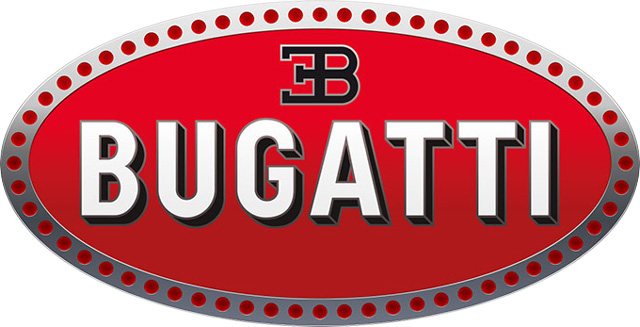
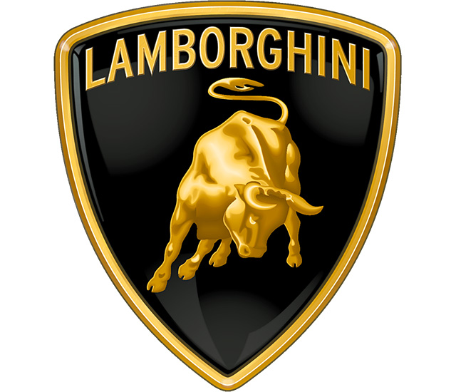
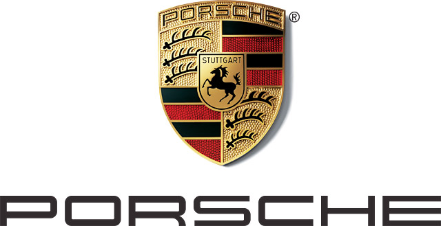

Project : SuperCars General Information

Ferrari
Ferrari is an Italian luxury sports car manufacturer based in Maranello. Founded by Enzo Ferrari in 1939 out of Alfa Romeo's race division as Auto Avio Costruzioni, the company built its first car in 1940. However, the company's inception as an auto manufacturer is usually recognized in 1947, when the first Ferrari-badged car was completed. In 2014 Ferrari was rated the world's most powerful brand by Brand Finance. In June 2018, the 1964 250 GTO became the most expensive car in history, setting an all-time record selling price of $70 million. Fiat S.p.A. acquired 50% of Ferrari in 1969 and expanded its stake to 90% in 1988. In October 2014 Fiat Chrysler Automobiles N.V. (FCA) announced its intentions to separate Ferrari S.p.A. from FCA; as of the announcement FCA owned 90% of Ferrari. The separation began in October 2015 with a restructuring that established Ferrari N.V. (a company incorporated in the Netherlands) as the new holding company of the Ferrari group and the subsequent sale by FCA of 10% of the shares in an IPO and concurrent listing of common shares on the New York Stock Exchange. Through the remaining steps of the separation, FCA's interest in Ferrari's business was distributed to shareholders of FCA, with 10% continuing to be owned by Piero Ferrari. The spin-off was completed on 3 January 2016. Throughout its history, the company has been noted for its continued participation in racing, especially in Formula One, where it is the oldest and most successful racing team, holding the most constructors championships (16) and having produced the highest number of drivers' championship wins (15). Ferrari road cars are generally seen as a symbol of speed, luxury and wealth.
Bugatti
Automobiles Ettore Bugatti was a French car manufacturer of high-performance automobiles, founded in 1909 in the then-German city of Molsheim, Alsace by the Italian-born industrial designer Ettore Bugatti. The cars were known for their design beauty and for their many race victories. Famous Bugattis include the Type 35 Grand Prix cars, the Type 41 "Royale", the Type 57 "Atlantic" and the Type 55 sports car. The death of Ettore Bugatti in 1947 proved to be the end for the marque, and the death of his son Jean Bugatti in 1939 ensured there was not a successor to lead the factory. No more than about 8,000 cars were made. The company struggled financially, and released one last model in the 1950s, before eventually being purchased for its airplane parts business in 1963. In the 1990s, an Italian entrepreneur revived it as a builder of limited production exclusive sports cars. Today, the name is owned by the Volkswagen Group.
Lamborghini
Automobili Lamborghini S.p.A. is an Italian brand and manufacturer of luxury sports cars and SUVs based in Sant'Agata Bolognese. The company is owned by the Volkswagen Group through its subsidiary Audi. Ferruccio Lamborghini, an Italian manufacturing magnate, founded Automobili Ferruccio Lamborghini S.p.A. in 1963 to compete with established marques, including Ferrari. The company gained wide acclaim in 1966 for the Miura sports coupé, which established rear mid-engine, rear-wheel drive as the standard layout for high-performance cars of the era. Lamborghini grew rapidly during its first decade, but sales plunged in the wake of the 1973 worldwide financial downturn and the oil crisis. The firm's ownership changed three times after 1973, including a bankruptcy in 1978. American Chrysler Corporation took control of Lamborghini in 1987 and sold it to Malaysian investment group Mycom Setdco and Indonesian group V'Power Corporation in 1994. In 1998, Mycom Setdco and V'Power sold Lamborghini to the Volkswagen Group where it was placed under the control of the group's Audi division.
Porsche
Ferdinand Porsche founded the company called "Dr. Ing. h. c. F. Porsche GmbH" in 1931, with main offices at Kronenstraße 24 in the centre of Stuttgart. Initially, the company offered motor vehicle development work and consulting, but did not build any cars under its own name. One of the first assignments the new company received was from the German government to design a car for the people, that is a "Volkswagen". This resulted in the Volkswagen Beetle, one of the most successful car designs of all time. The Porsche 64 was developed in 1939 using many components from the Beetle.